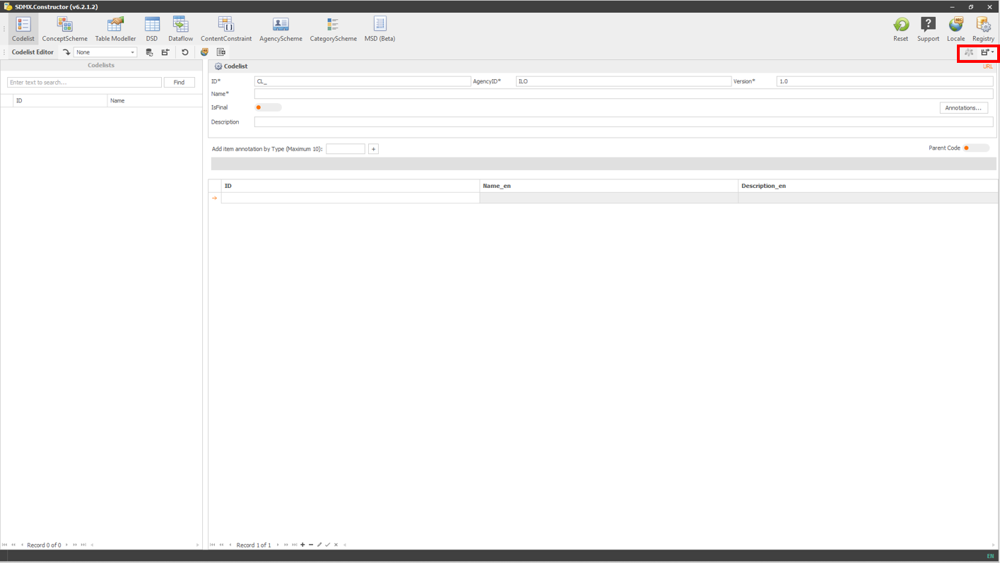

3.4 Preview and Export Menu
The fourth menu item group (Preview and Export) is in the top right corner and below the first group of menu items (as highlighted below).
 Click here to enlarge the image
{kind=link}
The options available in this group of menu items are related to the preview and export functionalities of the tool and change according to the menu item selected on the top menu (the second group of menu items (Editors)).
Below are the icons representing the menu items, along with their features. Users can change the size of these icons by right-clicking on any of them, selecting Customize, and selecting the appropriate setting in Options.
| Menu item | Names and functions |
|---|---|
| Export. It saves the SDMX artefact in a local folder. It is available for DSD, Dataflow, ContentConstraint, AgencyScheme, and MSD without specific options. However, options are available to save artefacts from: 1. Codelist (available in the following formats: .Stat v7 Dim, CSV and SDMX-ML) and 2. ConceptScheme, Table Modeller and CategoryScheme (available in two flavours: Save with descendants and Save without descendants). | |
| or  |
Push to DLM (DLM is short for Data Lifecycle Manager of the .Stat Suite). This icon becomes active (appears with colours) when the tool is connected with a DLM instance. It is available for Codelist, DSD, Dataflow, ContentConstraint, AgencyScheme, and MSD without specific options. However, options are available to save artefacts from ConceptScheme, Table Modeller and CategoryScheme. |
 |
Structure Viewer. It lets you preview the tabulation and download the MS Excel and CSV templates. It is available for DSD and Dataflow. |